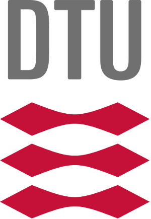

The Picnic family of digital signature algorithms is designed to provide security against attacks by quantum computers, in addition to attacks by classical computers. The building blocks are a zero-knowledge proof system (with post-quantum security), and symmetric key primitives like hash functions and block ciphers, with well-understood post-quantum security. Picnic does not require number-theoretic, or structured hardness assumptions.
Although not directly related to Picnic, other post-quantum secure (privacy enhancing) primitives use the same building blocks as Picnic. We believe that this work nicely demonstrates the flexibility of the basic Picnic design, which is why we list the respective papers below.
Picnic was designed by a group of cryptographers from Aarhus University, AIT Austrian Institute of Technology GmbH, DFINITY, Graz University of Technology, Georgia Tech, Microsoft Research, Northwestern University, Princeton University, Technical University of Denmark and the University of Maryland. The team includes Melissa Chase, David Derler, Steven Goldfeder, Jonathan Katz, Vladimir Kolesnikov, Claudio Orlandi, Sebastian Ramacher, Christian Rechberger, Daniel Slamanig, Xiao Wang, and Greg Zaverucha.

In addition to support from the institutions listed above, this work has been supported in part by EU H2020 projects PRISMACLOUD (grant agreement number 644962) and PQCRYPTO (grant agreement number 645622), by the NSF Graduate Research Fellowship (grant number DGE 1148900), by COST Action IC1306, by the Danish Council for Independent Research, by A-SIT, and by iov42.